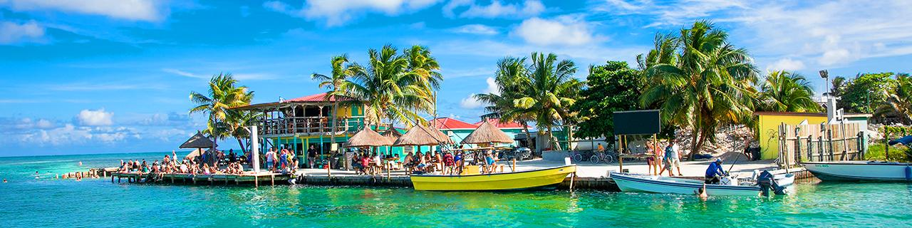
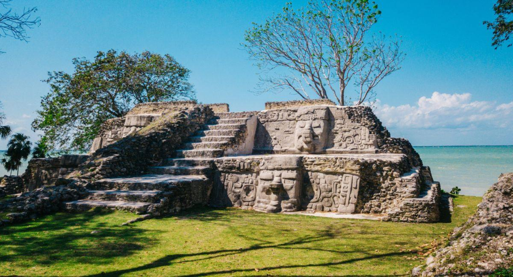
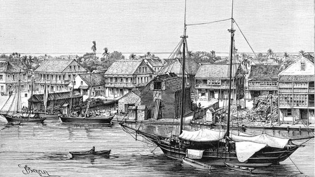
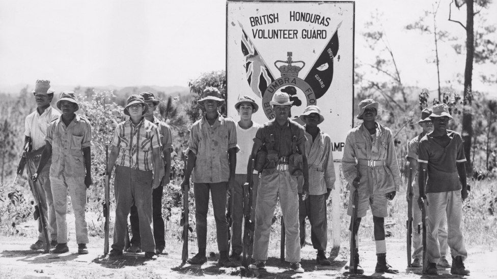

Belice es un país hermoso en América Central. Es probablemente uno de los secretos mejor guardados de Centroamérica y el Caribe. Quizás por ser el único país anglófono de esa región o por estar rodeado de excepcionales destinos turísticos en México y Guatemala, ha estado un poco fuera de los reflectores del turismo suramericano, pero en cambio, dentro de los de norteamericanos y europeos que ven un territorio con múltiples contrastes y atractivos.
La bandera de Belice , roja, blanca y azul, es un símbolo de la unidad de nuestra nación. Antes de la Independencia, el People's United Party (PUP) propuso una bandera azul con el escudo de armas en un círculo blanco. Debido a la estrecha asociación de la marca con el PUP, la opinión pública estaba dividida en cuanto a su idoneidad para actuar como un símbolo unificador.
El escudo del escudo de armas se divide en tres secciones por una línea vertical y una V invertida. La sección base representa un barco a toda vela en las olas del mar. Las dos secciones superiores muestran herramientas de la industria de la madera en Belice: una pala y un hacha de cuadrar en la sección derecha y una sierra y un hacha golpeando en la parte izquierda.
El escudo de armas representa un aspecto importante de la historia de Belice, como la industria de la caoba, formaron la base de nuestra economía en los siglos 18 y 19. Lema nacional: "Sub Umbra Floreo" - estas palabras en latín significa "Bajo la sombra florezco".
El Tucán de Quilla (Ramphastos Solfurantus) es el ave nacional de Belice. Es conocido por su gran proyecto de ley en forma de canoa, de colores verde, azul, rojo y naranja plumas. El ave es de unos 20 centímetros de longitud total. Es sobre todo negro con las mejillas de color amarillo brillante y el pecho, rojo debajo de la cola y una mancha blanca distintiva en la base de la cola.
Belice albergó una de las grandes civilizaciones mesoamericanas de la antigüedad, los mayas. Estos crearon prósperos enclaves comerciales, templos religiosos monumentales y exquisitas obras de arte. Poseían sofisticados conocimientos sobre su entorno terrenal y cosmológico, en buena parte dejados por escrito. Prosperaron del 200 a.C. al 1500, cuando sucumbieron al declive y a los ataques externos. Los cimientos de piedra de su reino señorial se convirtieron en un mundo perdido bajo la densa jungla.
Los restos arqueológicos indican que los asentamientos mayas de Belice son de los más antiguos. En el oeste, Cahal Pech, importante centro comercial durante más de 2000 años, se data hacia el 1200 a.C. En el norte, la majestuosa Lamanai, un importante centro religioso durante más de 2000 años, se fundó hacia el 1500 a.C. Aún viven en Belice tres grupos mayas diferentes: los mopán al norte; los yucatecas, llegados desde México, también en el norte; y los kekchí, que emigraron desde Guatemala, en el oeste y el sur.
Belice se convirtió en una de las bases caribeñas de los maleantes marítimos británicos, que a principios de s. XVII empezaron a usar la bahía de Honduras como lugar de saqueo de los galeones españoles. Los británicos de la zona empezaron así a ser conocidos como baymen (hombres de la bahía).
La costa beliceña presentaba varias ventajas estratégicas para los piratas. La tierra era rica y estaba deshabitada, ya que los españoles habían expulsado a los mayas pero no se habían establecido. Quedaba a poca distancia del concurrido canal del Yucatán por donde, con un poco de suerte, la Flota de Indias podía dirigirse a La Habana o bien la Flota de Tierra Firme podía llegar desde Panamá. La costa ofrecía protección, escondida tras espesos manglares e islas litorales, mientras que la larga barrera de arrecife suponía una traicionera trampa que mantenía a los buques de guerra españoles a una cierta distancia.
En 1638 se registró la creación oficial de un asentamiento británico en la embocadura del río Belice. En esa época, un capitán pirata escocés, Peter Wallace, decidió fundar una nueva población portuaria. Se dice que construyó los cimientos de lo que sería la futura Ciudad de Belice con virutas de madera y botellas de ron, es de suponer que vacías.
Belice continuó siendo colonia británica hasta 1981, algo tarde para las Antillas. España y Francia perdieron sus colonias caribeñas a finales del s. XIX y las colonias de las islas de Su Majestad se liberaron en la década de 1960. Debido a sus profundas divisiones étnicas, la identidad nacional se formó lentamente y el movimiento de independencia beliceño fue un proceso más de paciencia que de resistencia.
A principios de la década de 1950 se creó el Partido Popular Unido (PUP). Cuando la II Guerra Mundial causó el repentino cierre de los mercados de exportación, la colonia vivió una grave crisis económica que continuó hasta mucho tiempo después del fin de la guerra. Por todo Belice se sucedieron las manifestaciones antibritánicas, cada vez más militantes y, a veces, violentas. Las autoridades coloniales declararon el estado de emergencia, prohibieron las reuniones públicas e intimidaron a los defensores de la independencia.
Como respuesta, el PUP organizó una exitosa huelga general que finalmente obligó a Gran Bretaña a realizar concesiones políticas. El sufragio universal se amplió para todos los adultos y a la colonia se le concedió una cierta autonomía. Los cimientos imperiales de la antigua élite gobernante se desmoronaron al tiempo que las diferentes etnias de la colonia empezaban a bailar a un son beliceño común.
La independencia de Belice se pospuso hasta que se resolvió un molesto problema de seguridad. España nunca renunció formalmente a sus territorios beliceños, que con el tiempo pasaron a México y Guatemala. En el s. XIX Gran Bretaña firmó acuerdos con ambos países para reconocer las fronteras coloniales, pero el de Guatemala no acabó de cuajar.
Los beliceños esperaron pacientemente. En 1964 la colonia fue por fin autónoma e instauró un sistema parlamentario similar al de Westminster. En 1971 la capital se trasladó a Belmopán, un centro geográfico que unía simbólicamente todas las regiones y pueblos. En 1973 el nombre se cambió oficialmente de Honduras Británica a Belice. Y en septiembre de 1981 fue declarada nación-Estado independiente dentro de la Commonwealth británica. Incluso Guatemala reconoció Belice como nación soberana en 1991, aunque hoy en día mantiene su reclamación territorial.
El área total del país es 22 966 km², sin embargo el territorio real de Belice es de apenas 4323.964 km², siendo el resto unos 12 272 km² en litigio con Guatemala, hasta que dicho litigio sea llevado a la Corte Internacional de Justicia.
Es una de las maravillas naturales del mundo, además de un sitio popular entre los buzos que buscan descubrir tiburones de arrecifes caribeños.
Es uno de los ecosistemas más diversos del mundo que cuenta con cientos de especies de corales y peces de todos los tamaños y colores.
Uno de los múltiples sitios arqueológicos de Belice, se caracteriza por conservar cerámica original y esqueletos de una civilización ancestral.
Es uno de los grandes atractivos naturales de Belice. Fue la primera reserva creada en el país con la intención de proteger los bosques nativos y los ecosistemas.